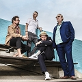
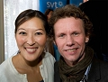
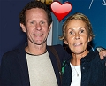

Bo Sundström
Textskrivare, musiker, sångare i Bo Kaspers orkester.
| Född: | 1961 Piteå sfs, Piteå stad. [1] |
|---|
| Levde: | 1971 Tallåsg 7, Piteå sfs, Piteå stad. [1] |
|---|
| Levde: | 1981 Stadsön 117 F, Tallåsg 7, Piteå, Piteå sfs, Piteå kn. [2] |
|---|
Noteringar
Bo Sigvard Sundström, född 16 oktober 1961 i Piteå, är en svensk sångare, gitarrist och låtskrivare. Bo Sundström är mest känd som medlem i Bo Kaspers orkester; i detta sammanhang använder han artistnamnet Bo Kasper. Under eget namn har han givit ut tre album; Skåne (2004), Den lyckliges väg (2007) tillsammans med Frida Öhrn samt Mitt dumma jag - svensk jazz (2018).
Tillsammans med Erik Westin gav han 1989 ut singlarna Längtans Arméer och Stockholms Stad under gruppnamnet Söner.[1][2][3]
Privatliv
Bo Sundström är kusin till den före detta ministern Anders Sundström. Han var gift med journalisten Lena Sundström och bosatt i Stockholm.
TV-framträdanden
Bo och Lena Sundström deltog tillsammans i tv-serien På spåret 2009–10, där de kom på femte plats. Han har även själv gästat Babben & Co och Sommarkrysset.
Bo Sundström har medverkat i 2013 års upplaga av TV4:s Så mycket bättre.
Diskografi
Som soloartist (Bo Sundström)
Bo Kaspers orkester med Bo i hatt i mitten.
2004 - Skåne
2007 - Den lyckliges väg (med Frida Öhrn)
2014 - Drömlänges (med Frida Andersson)
2018 - Mitt dumma jag - svensk jazz
Med Bo Kaspers orkester
1993 - Söndag i sängen
1994 - På hotell
1996 - Amerika
1998 - I centrum
2001 - Kaos
2003 - Vilka tror vi att vi är
2006 - Hund
2008 - 8
2010 - New Orleans
2012 - Du borde tycka om mig
2015 - Redo att gå sönder
Referenser
Noter
1. ”Söner - Längtans Arméer”. Discogs.
2. ”Söner”. Discogs.
3. Ronny Olovsson (20 september 2001). ”Bo tog det lugnt - och blev störst”. Aftonbladet.
Externa länkar
Bo Sundström på Internet Movie Database
www.imdb.com/name/nm1759620/
Bo Sundström på Discogs (solodiskografi)
www.discogs.com/artist/816358-Bo-Sundstr%C3%B6m
Bo Kaspers orkester
www.facebook.com/bokaspersorkester/
Personhistoria
| Årtal | Ålder | Händelse |
|---|
| 1961 |
|
Födelse 1961 Piteå sfs, Piteå stad [1] |
| 1963 |
|
Brodern Nils Erik Sundström föds 1963-08-08 Piteå sfs, Piteå stad [1] |
| 1971 |
|
Levde 1971 Tallåsg 7, Piteå sfs, Piteå stad [1] |
| 1981 |
|
Levde 1981 Stadsön 117 F, Tallåsg 7, Piteå, Piteå sfs, Piteå kn [2] |
| 1993 |
|
Modern Ann Evy Jonsson dör 1993-11-17 Kolmilav 45, I, Piteå sfs, Piteå kn [3] |
| 2011 |
|
Brodern Nils Erik Sundström dör 2011-02-27 Norra Pitholmsvägen 11, Piteå, Piteå sfs, Piteå kn [4] |
| 2013 |
|
Fadern Ivar Alrik Ingemar Sundström dör 2013-08-07 Storgatan 92, Lgh 1202, Piteå, Piteå sfs, Piteå kn [4] |
Dokument
Källor
| [1] | Mtl Norrbottens län 1971 |
| |
| | |
| [2] | Mtl Norrbottens län 1981 |
| |
| | |
| [3] | RTB 93 / SPAR 92f / SPAR 95 |
| |
| | |
| [4] | FK 13 / man91 |
| |
|
 |
| 2019. Bo Sundström, Bo Caspers Orkester |
| |
|  |
2019-05-09. Bo Caspers Orkester
Bandmedlemmar
Fredrik Dahl, trummor
Michael Malmgren, bas
Bo Kasper Sundström, sång, gitarr
Mats Schubert (tidigare Asplén), piano, klaviatur, gitarr
|
| |
|  |
2016-08-10. Paret Lena och Bo Sundström.
Bo Kaspers Orkesters frontfigur Bo Sundström och hans fru, journalisten, författaren och SVT-profilen Lena Sundström, skiljer sig.
Paret har varit separerade sedan i fjol men skiljer sig nu på pappret och har lämnat in en gemensam ansökan om äktenskapsskillnad, skriver Expressen.
Bo och Lena Sundström har varit ett par sedan 1993 och har två barn tillsammans.
Bild Bild: Jonas Ekströmer
www.kuriren.nu/noje/lyktan-vagabondo-och-stekhuset-minns-du-klassiska-luleahaken-8877447.aspx
TT16:14 | 2016-08-10
|
| |
|  |
2018-09-24. Bo Sundström och Kristina "Kinna" Flemming.
Av: HANS & ANNA SHIMODA
i NÖJE
24 september, 2018
www.hant.se/efter-skilsmassan-bo-sundstrom-bryter-tystnaden-om-nya-karleken-kinna-flemming/
|
|

{kind=link}
{kind=link}
{kind=link}